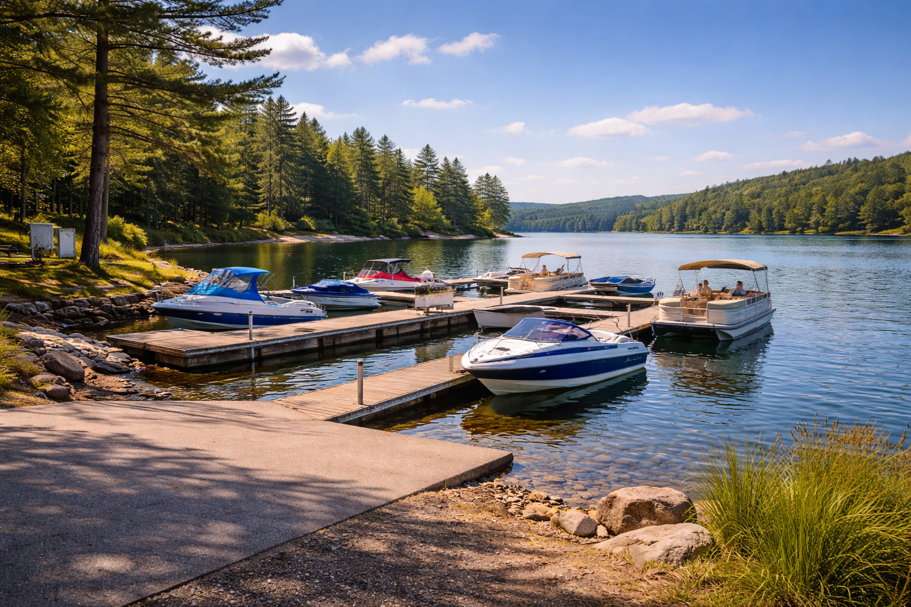
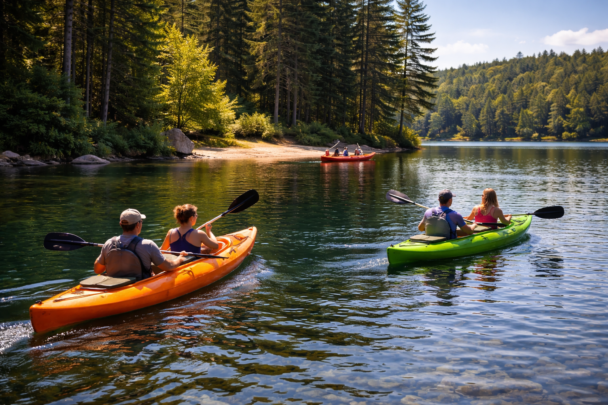
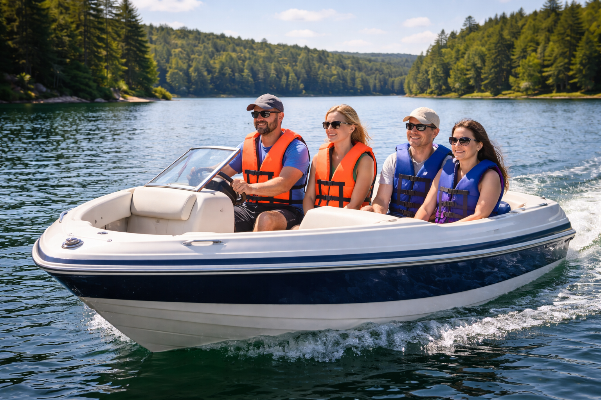
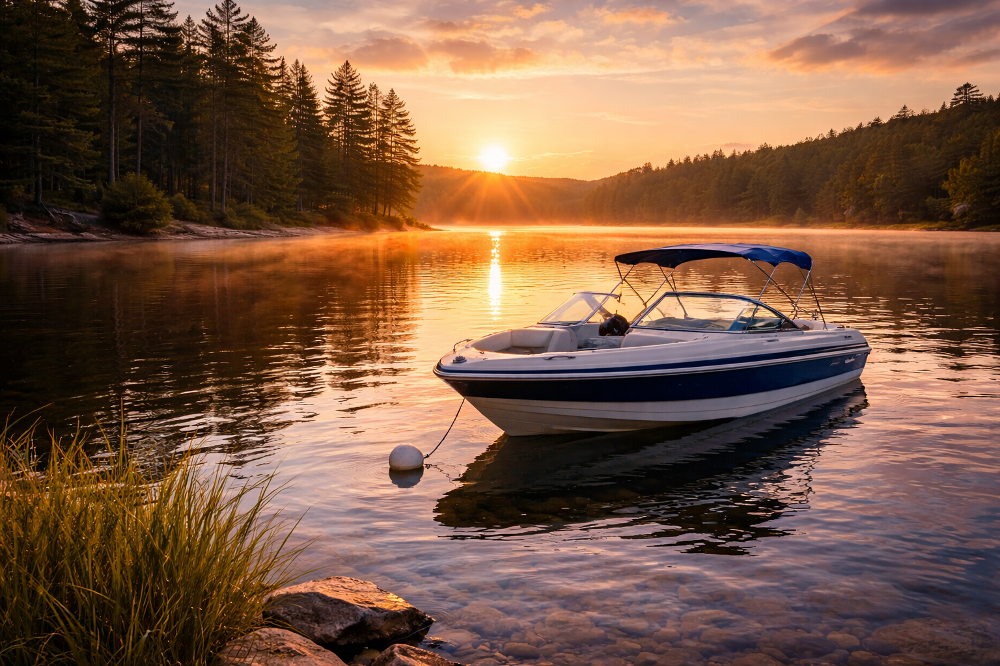
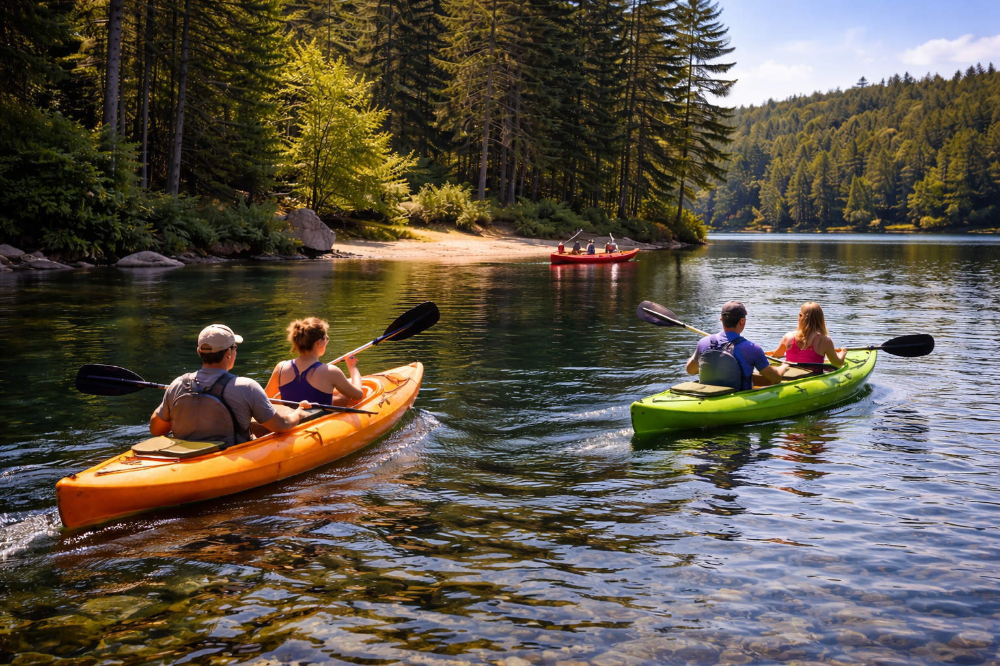
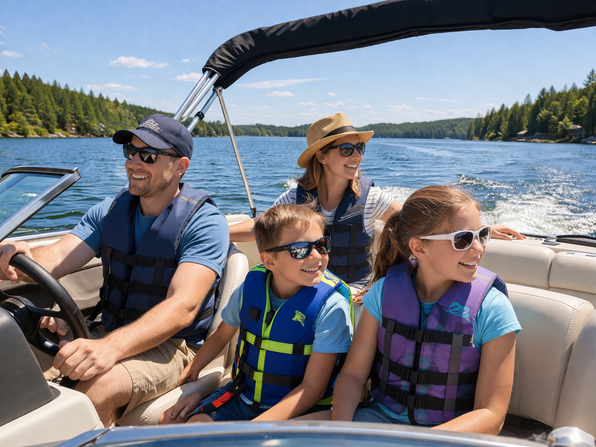

Boating
Enjoy the water with fun boating activities, safety tips, and great places to explore
Boating is a fun and exciting way to enjoy lakes, rivers, and other outdoor destinations. It gives people the chance to relax, explore new places, fish, swim, and spend time with family and friends. Whether you are using a kayak, canoe, fishing boat, or larger recreational boat, boating is a great outdoor activity for all ages.
Boating Activities
There are many different ways to enjoy boating. Some people like a peaceful ride across a lake, while others enjoy fishing, tubing, water skiing, or exploring shorelines and small islands. Kayaking and canoeing are also popular choices for people who want a quieter and more active boating experience.
Popular boating activities include:
- Cruising on a lake or river
- Fishing from a boat
- Kayaking and canoeing
- Tubing and water sports
- Swimming from anchored boats
- Watching sunsets on the water
- Exploring coves, islands, and shorelines
Boating can be relaxing or adventurous depending on the type of trip you want to take.

Boating Safety Tips
Safety is one of the most important parts of any boating trip. Before going out on the water, make sure the boat is in good condition and that everyone has the proper safety equipment. It is also important to check the weather and avoid boating in dangerous conditions.
Important boating safety tips:
- Always wear or bring a life jacket for every person on board
- Check the weather forecast before leaving
- Bring a whistle, flashlight, and first aid kit
- Follow boating rules and speed limits
- Let someone know where you are going
- Keep an eye on fuel levels
- Avoid overloading the boat
- Stay alert for other boats, swimmers, and shallow water
Being prepared helps make boating safer and more enjoyable for everyone.

Great Places to Go Boating
Many lakes, rivers, and recreation areas offer great boating opportunities. Popular boating destinations often have public launches, calm water areas, beaches, and scenic views. Some places are better for kayaking and canoeing, while others are perfect for pontoons, fishing boats, or speedboats.
Good boating locations usually include:
- Public boat launches
- Calm water for beginners
- Scenic shorelines and open water
- Nearby parks, beaches, or picnic areas
- Space for activities like fishing or tubing
When choosing a boating destination, think about the type of boat you are using and the kind of experience you want.
Why People Enjoy Boating
Boating gives people the chance to enjoy fresh air, beautiful views, and time on the water. It can be a peaceful way to unwind or an exciting activity filled with adventure. For many people, boating is one of the best ways to enjoy summer and make memories with family and friends.


